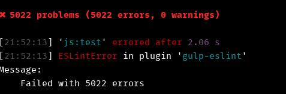

Browserify
chez Wanadev
Créé par Baptiste Donaux
Baptiste Donaux
- Lead Developer chez Wanadev
- www.wanadev.fr
- www.baptiste-donaux.fr
- @baptistedonaux
- baptiste.donaux@gmail.com
- baptistedonaux
À quoi ça sert ?
- À faire du beau javascript
- Avec une belle syntaxe (CommonJS)
- À utiliser des modules NPM
- À transpiler
Gestion des dépendances
Gestion des dépendances
Aujourd'hui on utilise Bower.
Maintenant, on peut utiliser NPM.
Gestion des dépendances
- npm (ou yarn) sont déjà des gestionnaires de dépendances.
- Mais Bower peut encore être utile pour les dépendances non-JS (font-awesome par exemple).
npm: Pourquoi et pour qui ?
Pour les dépendances Node.js (avec la syntaxe CommonJS).
Mais nous on fait du front
... et Node.js c'est pour le back
Node.js possède une syntaxe cool donc on a envie de s'inspirer !
Module ES6
Les Modules ES6 propose également une gestion à base de module qui ressemble fortement à celle de Python.
//------ lib.js ------
export const sqrt = Math.sqrt;
export function square(x) {
return x * x;
}
export function diag(x, y) {
return sqrt(square(x) + square(y));
}
//------ main.js ------
import { square, diag } from 'lib';
console.log(square(11)); // 121
console.log(diag(4, 3)); // 5
You can also import the complete module:
//------ main.js ------
import * as lib from 'lib';
console.log(lib.square(11)); // 121
console.log(lib.diag(4, 3)); // 5
Module ES6, pourquoi ne pas s'en servir ?
- On utilise la même syntaxe pour du {back,front}-end
- Si on roxe, on peut même écrire du code cross interpréteur 💪
- La syntaxe Browserify se base sur un standart posé (CommonJS)
- Les modules ES6 n'ont pas tout à fait fait leur preuve...
- ... Au pire, Browserify et les modules ES6 s'appuie sur les mêmes principes
Comment on s'en sert à Wanadev ?
Comment on s'en sert à Wanadev ?
On identifie les grosses parties de son site.
Exemple :
- Public
- Front-office
- Back-office
Comment on s'en sert à Wanadev ?
Et on va construire un fichier (appelé aussi bundle) qui contenir tout le code JavaScript propre à notre partie.
| Inconvénients | Avantages |
|---|---|
|
|
Arborescence
app
|__ Resources
|__ public
|__ js
|__ back.js
|__ front.js
|__ public.js
|__ _base.js (contient le code commun à toutes les pages)
Entryfile
Les fichiers back.js, front.js et public.js sont des entryfiles.
Ils vont contenir les dépendances à intégrer mais ne contiennent aucun code métier.
Entryfile - Exemple
"use strict";
require("./_base.js")();
const modules = {
"app_default_index": require("./default/index.js"),
};
module.exports = function(module, ...args) {
if (modules[module] === undefined) {
console.error(`Module ${module} doesn't exist.`);
return;
}
try {
modules[module](...args);
} catch (error) {
console.error(`[${module}] Exception thrown`);
throw error;
}
};
Entryfile - Standalone
Les entryfiles sont les seuls fichiers auxquels nous allons accéder. L'option standalone de Browserify permet d'exposer module.exports dans une fonction.
Exemple de code métier
"use strict";
function foo(qux, quux) {
console.log(qux, quux);
}
module.exports = (bar, baz) => {
foo(bar, baz);
};
Exemple d'utilisation
Exemple, nous avons compilé notre bundle et exposer le fichier dans la fonction love
← love("foo");
→ Module foo doesn't exist.
← love("app_default_index", "Allô", "quoi ?!");
→ Allô quoi ?!
← foo();
→ undefined
Comment utiliser des dépendances
Genre jQuery... 🐻
"use strict";
const $ = require("jquery");
module.exports = () => {
$("body").html("👌");
};
Et jQuery n'est pas accessible dans le scope locale !
B{rowserify,abel}
Babel
Il permettait initialement de transpiler du code ES2015 (ES6) en code ES5.
Babel
Maintenant il permet de transpiler du code dans plusieurs objectifs. On appelle ses modules des presets.
- ES2015
- JSX
- et bien d'autres
Babel
Mais Browserify et Babel ils ne savent parler ensemble, donc on va utiliser Babelify que va être appelé par Browserify pour transpiler le code grâce à Babel.
Exemple
ES2015
const fn = (...args) => {
console.log(...args);
};
ES5
var fn = function fn() {
var _console;
(_console = console).log.apply(_console, arguments);
};
Faire approuver sa syntaxe
Faire approuver sa syntaxe
ESLint nous permet de valider notre code source. Il permet d'harmoniser notre code source et de réaliser un code de qualité !
Gulp & Browserify
Gulp & Browserify
Browserify est souvent intégré directement dans le projet comme Webpack. Nous on utilise Gulp parce que c'est un véritable orchestrateur de tâches.
Watchify
gulp-watch est caduc. Browerify consomme beaucoup de mémoire pour résoudre toutes les dépendances. Pour résoudre ce problème, il existe watchify qui stocke les fichiers en mémoire et ne recompile que le fichier qui vient de changer. Son intégration avec gulp donc je l'ai fait pour vous.
Compilation des fichiers non CommonJS
Compilation des fichiers non CommonJS
Le problème c'est lorsqu'on veut utiliser des dépendances qui ne sont pas faites pour Browserify, ou qui ne sont peut-être même pas de NPM.
Une dépendance pas sur npmjs.org ?
Dans ce cas, vous avez toujours Bower.
Une dépendance non CommonJS
Le project browserify-shim permet justement de compiler des fichiers non standart.
Et parfois, ça sauve la vie !
Surprise

- Browserify c'est tellement simple
- Et puis j'avais un peu de temps...
Wanadev !
Entièrement compilé avec Browserify !
Et un code qui ne ne lève plus d'erreur dans ESLint.

Mais bon ça c'était pas trop compliqué
... et ça manquait de fun !
Wanadev ! 🤔
Wanadev & React
Implémentation du compteur tasse à café avec React !